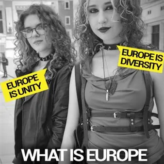

da lun 26 ott a lun 16 nov
What is Europe to you?
Dal 26 ottobre (dalle 10) al 16 novembre l’Università di Udine ospiterà a Palazzo di Toppo Wassermann (via Gemona 92, Udine) la mostra fotografica “What is Europe to you?” (www.whatseurope.eu). Un racconto per immagini dell’artista Lisa Borgiani che dal 2019 viaggia nelle…
 Indicazioni
Indicazioni
- Costi e prenotazioni
- Costo non indicato · Prenotazione non indicata
- Programma
- Programma da verificare. Apri la fonte ufficiale per orari e possibili aggiornamenti.
- In caso di maltempo
- Nessuna indicazione specifica pubblicata.
- Note
- Acquisito automaticamente dalla fonte.
L’EVENTO
Descrizione completa
Dal 26 ottobre (dalle 10) al 16 novembre l’Università di Udine ospiterà a Palazzo di Toppo Wassermann (via Gemona 92, Udine) la mostra fotografica “What is Europe to you?” ( www.whatseurope.eu ). Un racconto per immagini dell’artista Lisa Borgiani che dal 2019 viaggia nelle principali città europee, e oltre i suoi confini, ponendo a ogni persona ritratta una domanda: «Che cos’è l’Europa per te?». A oggi sono oltre 1500 i ritratti realizzati. Durante la mostra i visitatori potranno partecipare pubblicando e stampando il loro autoritratto (con la piattaforma Weywall), accompagnato da un pensiero sull’Europa. L’iniziativa è organizzata dalla Casa per l’Europa di Gemona del Friuli e dal Dipartimento di Studi umanistici e del patrimonio culturale dell’ateneo.
La mostra sarà inaugurata lunedì 26 ottobre, alle 10, nel Velario del Palazzo di Toppo Wassermann . A parlarne saranno l’autrice, Lisa Borgiani , e Andrea Zannini , professore di Storia moderna dell’ateneo friulano. Presenteranno la selezione dei ritratti esposti dando una lettura ragionata del lavoro fatto a quasi otto anni dal suo inizio. Porteranno i saluti iniziali il presidente della Casa per l’Europa di Gemona, Ivo Del Negro ; il vicesindaco di Udine, Alessandro Venanzi , e la direttrice del Dipartimento di Studi umanistici e del patrimonio culturale, Linda Borean .
In ogni città l’artista fotografa persone incontrate casualmente, dal centro alla periferia, per restituire uno spaccato sociale diversificato e raccogliere risposte immediate e spontanee. Ogni opera è composta dal ritratto, dal nome, dalla professione, dal luogo dello scatto e da una frase che sintetizza l’idea di Europa.
Fra le città presenti nell’archivio vi sono Berlino, Atene, Milano, Roma, Parigi, Budapest, Madrid, Riga, Vilnius, Tallinn, Strasburgo, Lisbona, Cracovia, Kyiv, Londra, New York, Ginevra e Podgorica. Nell’esposizione sono presenti anche i ritratti realizzati da quattro fotografi ucraini che hanno partecipato al progetto: Mykhaylo Palinchak, Olga Kovalova, Katya Moskalyuk e Tim Melnikov.
IL PROGRAMMA
Programma e orari
Appuntamenti raccolti dalle fonti elencate. Dove manca un orario, non è ancora disponibile in questa scheda.
Programma pubblicato
- Dal 2026-10-26 al 2026-11-16
INFORMAZIONI UTILI
Prima di partire
- Controllare la fonte prima di partire.
ORGANIZZAZIONE